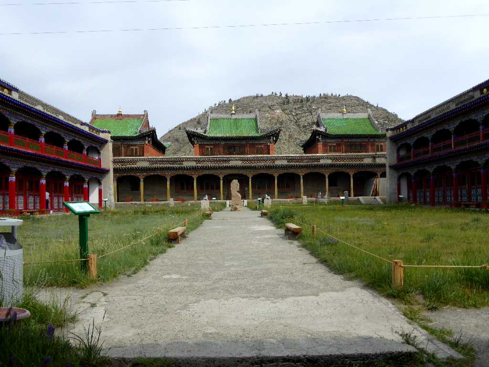
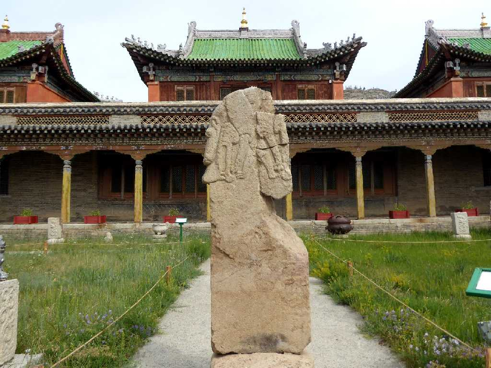
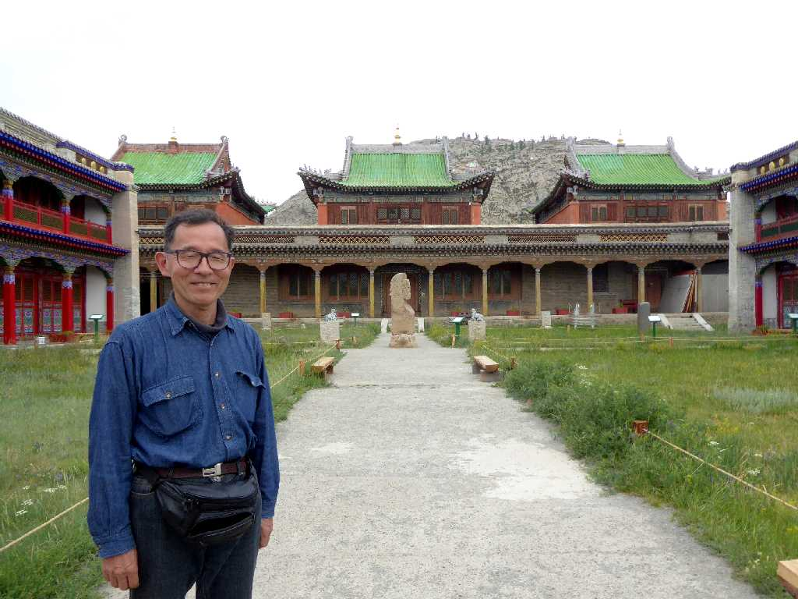
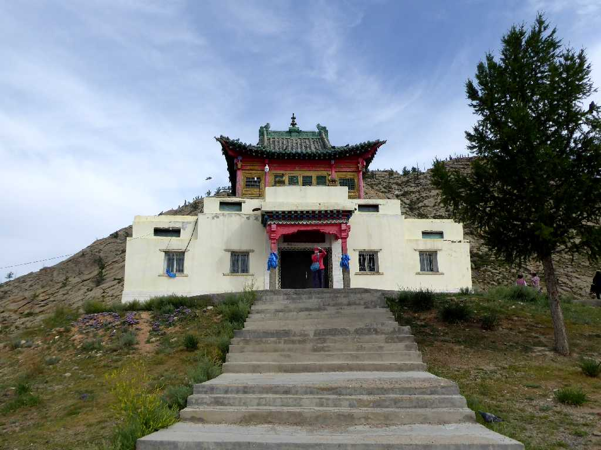
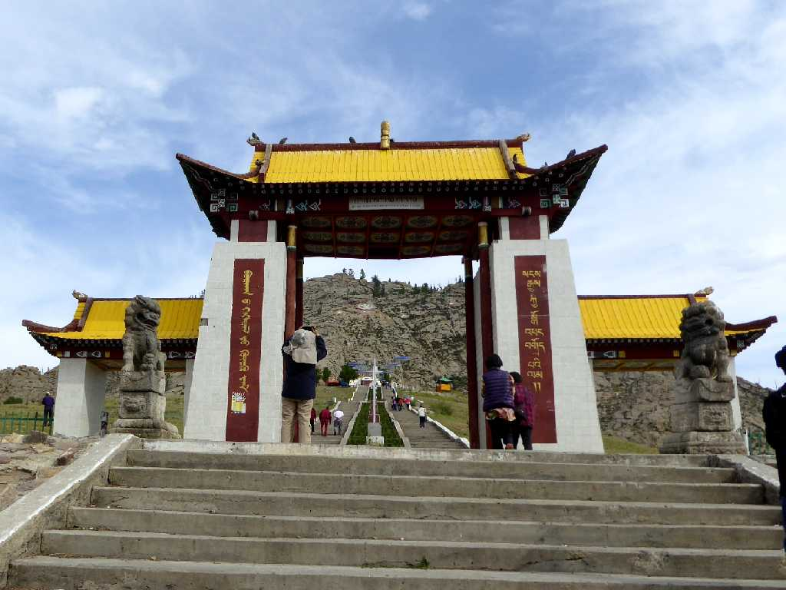

Guden Süm Lama monastery Tsetserleg
１６８０年に創られたラマ教の寺 右は夏の寺で左は冬の寺となっている

Lama monastery Tsetserleg
ツェツェルレグは古くから商業と文化の中心地として栄えアルハンガイ県の県庁の所在地となっている

July 10 2017 Lama monastery

Galdan Zuu

July 10 2017 Galdan Zuu